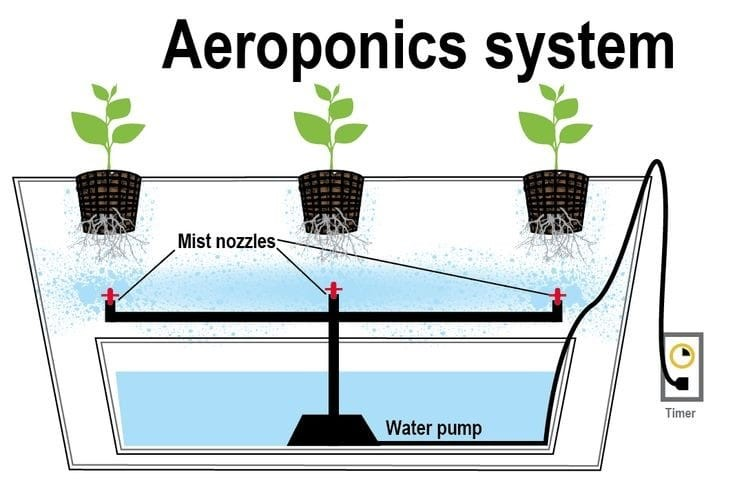
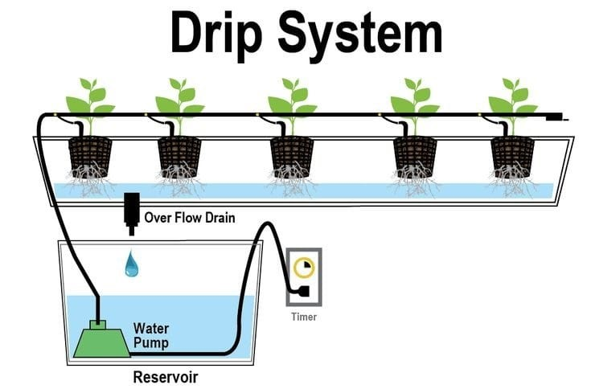
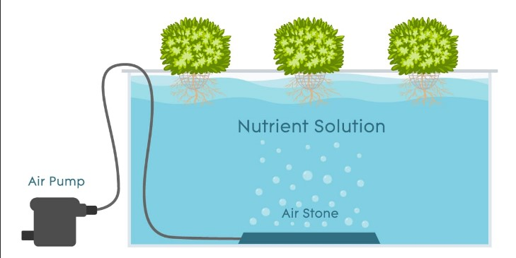
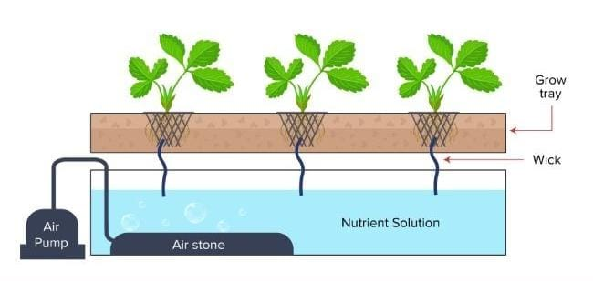

Sistem aeroponik adalah cara super canggih dalam dunia hidroponik yang bisa dibilang jadi juara dalam hal hasil dan kecepatan. Bayangkan, larutan nutrisi yang kaya oksigen disemprotkan dalam bentuk kabut langsung ke akar tanaman! Dengan metode ini, akar bisa menyerap semua nutrisi yang dibutuhkan dengan lebih mudah. Tanaman pun jadi tumbuh lebih subur dan cepat, karena mereka mendapatkan dua hal penting: nutrisi yang tepat dan oksigen yang cukup. Jadi, kalau kamu mau hasil panen yang maksimal dan cepat, sistem aeroponic adalah pilihan yang tepat!
1. Sistem Aeroponik

2. Sistem Tetes

3. Sistem Budaya Air

4. Sistem Sumbu
